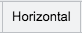
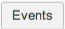

Using a Next Generation BSM Map
| |
Note: This article applies to Fuji and earlier releases. For more current information, see Business Service Map Properties at http://docs.servicenow.com
The ServiceNow Wiki is no longer being updated. Visit http://docs.servicenow.com for the latest product documentation. |
1 Overview
A Next Generation Business Service Management (NG-BSM) map has one starting point, called the root CI or root node of the map. The root CI is highlighted with a circle around it. The maps can show both upstream and downstream dependencies for the root CI. By default the NG-BSM map displays 3 levels, both upstream and downstream relationships. Administrators can configure the number of levels displayed. The map collapses and expands clusters to make them easier to view. By default, clusters are collapsed.
Use the layout controls to display map elements in different configurations for easier management. Use the filter panel to display fewer levels or to filter out elements you don't want to see, then save the filter for use later. Draw new relationships between elements or edit existing relationships.
In a NG-BSM map, a glyph indicates if a CI has any active, pending issues. You can investigate the tasks that are connected to a CI to get more details. Neighbor nodes affected by an issue are highlighted.
When you return to the map from another form, the system restores the last map viewed, using the default filter and layout settings. When you click the BSM map icon () on a CI record or on a task record that identifies a CI, the Next Generation BSM Map opens. This option is configurable in the map properties module if you would like the Eureka version of BSM maps to display instead.
{kind=link}
| |
Note: If you are using a version of the ServiceNow platform other than Fuji, see related documentation in Business Service Management Map. |
{kind=link}
2 Accessing the Map
When you access the map from one of the view options, the map is centered on the root CI, and displays the layout and number of levels defined in Map Properties. Administrators can configure these settings.
When you access the map from a saved view, the map opens using the saved properties.
To access a Next Generation BSM map, navigate to BSM Map > Next Generation BSM and open one of these modules:
- View Map in New Tab: Opens the map in a new, full screen tab without the application navigator.
- View Map: Opens the map in the content pane of the current tab.
- Saved Views: Opens a view of a map that you previously saved. Click a number in the Version column, and then click the map icon ().
3 Managing the Map
The NG-BSM Map controls allow you to load, filter, arrange, and export the map. The application contains the following menu items across the top.
| The menu icon allows you to save, load and export views of the map. | |
| Next to the menu icon is the name of the current root node (CI) of the map. | |
| Enter the name of a CI or service to load into the map. Alternatively, you can start typing to have the auto-complete feature present a list of CIs and services that match your partial value. The search results are filtered by Infrastructure View and Service View. | |
|  | Choose a layout for the map. |
|  | The Events button displays incidents and change requests about a selected CI. If the Event Management application is active, the Events button also displays events and alerts. |
| View and create filters for the map. | |
Use the navigation tools to increase or decrease the view of the map, rearrange the icons on the map, and move the map on the page.
|
{kind=link}
{kind=link}
{kind=link}
{kind=link}
{kind=link}
{kind=link}
3.1 Save and Load Map Views
In the View Map module, use the menu icon to save and load views of the map.
To delete saved views of the map:
- Navigate to the Saved Views module.
- Use the checkbox in the first column of the table to select the map views you wish to delete.
- Select Delete from the Actions on selected rows drop-down menu.
3.2 Search and View CIs and Services
Use the Infrastructure View or the Service View buttons at the bottom of the map, or use the Search box. In the Search box, the results are filtered by an Infrastructure View and a Service View.
The Infrastructure View displays results from the Configuration Item [cmdb_ci] table. Do not use this view to display data imported from ServiceWatch. The Service View displays business services that are imported from ServiceWatch data. This is a read-only view.
When you open the map from the left-navigation bar, the Infrastructure View is used. Starting with the Fuji release, when you open the map from a form such as a CI form and the CI is determined to be a business service, the map opens in the Service View view.
3.3 Layouts for the Next Generation BSM Map
You can select from different layout options for your NG-BSM Map.
The following options are available for the map elements from the Layout menu.
- Vertical Hierarchy: displays the elements in a vertical tree pattern according to their upstream and downstream relationships. This is the default value for the initial display of the map.
- Horizontal Hierarchy: displays the elements in a horizontal tree pattern according to their upstream and downstream relationships.
- Radial Hierarchy: displays the elements in a radial pattern according to their upstream and downstream relationships.
- Force: centers the elements around the parent CI, regardless of upstream or downstream relationships.
- Group: groups the elements according to their CI type.
3.4 Filtering the View on the Next Generation BSM Map
You can filter the NG-BSM map view to target specific types or categories of configuration items (CIs).
Use the filter panel to control which elements of the map are displayed and to save versions of a filter for later use.
Open or close the filter panel with the Filters button in the map's header bar.
Filter groups and controls in the filter panel are contained within collapsible strips. Click a strip to expand or collapse it. Within each strip, you can select individual items.
The following panels are available.
| Create New Filter | Configure the desired filter settings and enter a name for the filter in this text box.
Click Save and the filter will be available from the Load Saved Filter option. |
| Load Saved Filter | Apply a previously saved filter to the current NG-BSM map. |
| Max Levels | Use this filter to designate how many levels from the root CI display on the map. |
| Filter CIs by Depth | Use this filter to designate which levels of CI display on the map. |
| Filter CIs by CI Type | Use this filter to designate what CI types display in the map. |
| Filter CIs By Location | Use this filter to designate what CI locations display in the map. |
| Filter CIs By CI Manufacturer | Use this filter to designate what CI manufacturers display in the map. |
| Filter Relationship Types | Use this filter to designate what relationship types display in the map.
(Starting with Fuji Patch 3) |
| Filter Task Types | Use this filter to designate what types of tasks display and get counted in the map.
(Starting with Fuji Patch 3) |
| Remove Filtered Items | Off: The items that are filtered out are greyed out on the map.
On: The items that are filtered out are removed from the map. |
| Run Layout Automatically | On: The configured layout to the map is reapplied whenever the filter is changed.
Off: The map layout remains static when the filter is changed. |
| Fit Screen Automatically | On: The map magnification will increase or decrease automatically to show all CIs on the map.
Off: The map magnification remains unchanged when the map is reloaded. |
{kind=link}
{kind=link}
3.5 Next Generation BSM Map CI Node Controls
Right-click a CI node to access the following controls.
| Control | Function |
|---|---|
| View Form | Displays the CMDB record of the selected CI in a new tab of the browser. |
| View Map | Reloads the map using the selected CI as the new root node, with the currently defined layout setting. This option does not display on the root node. |
| View Related Tasks | Displays all tasks involving the selected CI, including incidents, problems, change requests, and follow-on tasks. This option is always available, even if there are no tasks associated with the CI. This option does not appear on collapsed nodes. |
| View Affected CIs | You can investigate the tasks that are connected to a CI to get more details. You might need to configure the incident, problem, or change form to display the Affected CI related list. |
| Add Affected CIs | This option is only visible when you access the map from the map icon in a task record's Configuration item field. |
| View Related Outages | Displays all outages involving the selected CI. This option does not appear on collapsed nodes. |
| Add Relationship | This option displays a dotted green line that you can drag to another CI to create a relationship link. A popup dialog allows you to define the relationship type. |
| Run Layout From Here | This option re-runs the chosen layout using the current node. Use this option to get a new or clearer view on the same map. |
3.6 Next Generation BSM Map Information Glyphs
The glyph that appears in the lower left of the CI indicates the sum of the number of incidents, problems and change requests on the node. Neighbor nodes affected by an issue are highlighted†. If the node is a collapsed node or represents a cluster, the number represents all of the incidents, problems and change requests for all the collapsed nodes.
The color of the glyph is determined by the map indicator settings.
† Note: Due to technical constraints, in the Safari browser, highlighting an affected node is replaced by adding a bold style to the label of the CI.
4 Exporting a Next Generation BSM Map
You can export a NG-BSM map to an image in the PNG format.
- In the map page, click Export Image.
- A thumbnail image of the map appears.
- Right-click the thumbnail and select Save Image As.
- Save the PNG image to the local drive or to a location on the network.
{kind=link}
| |
Note: You can not export images from NG-BSM map using Internet Explorer as your browser. |